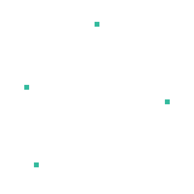
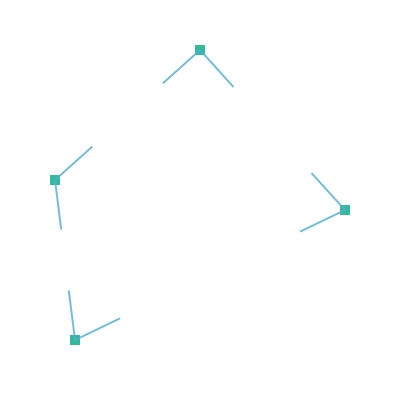
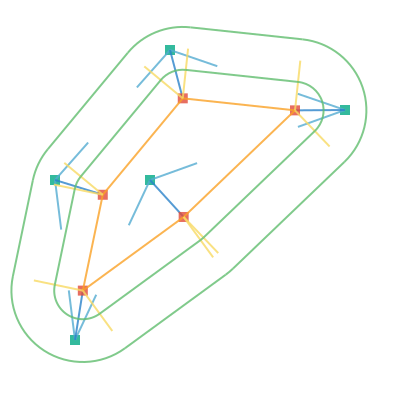
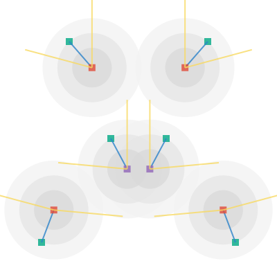

I have always been addicted to these:
So let’s paint some roads using the Haskell programming language.
A point is represented by the data type Point. We create a list of some example points.
data Point = Point Double Double
points = [Point 200 100, Point 100 300, Point 300 200]
We fill the canvas by white and draw each point by the functions drawMarkerAt and drawOneMarker.
drawOneMarker bw (r,g,b) = do
rectangle (-0.5*bw) (-0.5*bw) bw bw
setSourceRGBA r g b 0.8
fill
drawMarkerAt (Point x y) = do
save
translate x y
drawOneMarker 20.0 red
restore
paintCanvas = do
setSourceRGB 1 1 1
paint
mapM_ drawMarkerAt points
The result is an image surface of size 400x400px, which we write to a file.
createPng fileName = do
let w = 400
h = 400
img <- createImageSurface FormatARGB32 w h
renderWith img paintCanvas
surfaceWriteToPNG img fileName
The full code for the red dots is here: red-dots.hs

To connect the points, we define the data type for vector. The colors are represented as RGB or RGBA color.
data Vector = Vector Double Double
data RGBA = RGB Double Double Double
| RGBA Double Double Double Double
The colors now become
white = RGBA 1.00 1.00 1.00 1.00
red = RGB 0.88 0.29 0.22
orange = RGB 0.98 0.63 0.15
yellow = RGB 0.97 0.85 0.39
green = RGB 0.38 0.74 0.43
darkGreen = RGB 0.00 0.66 0.52
We get the line segments and corresponding vectors by
mkVector (Point x0 y0) (Point x1 y1) =
Vector (x1 - x0) (y1 - y0)
points = [Point 200 100, Point 100 300, Point 300 200]
segments = zip points (tail (cycle points))
vectors = map (uncurry mkVector) segments
The function uncurry from Prelude is used to unzip the tuple made by zip. To draw one vector, we use
drawVector (Point x y) (Vector dx dy) = do
setColor orange
moveTo x y
relLineTo dx dy
stroke
Again, we clear the canvas and paint the markers and vectors connecting them.
paintCanvas = do
setSourceRGB 1 1 1
paint
mapM_ drawMarkerAt points
mapM_ (uncurry drawVector) (zip points vectors)
The full code for the orange lines: orange-lines.hs

Next we find out the normals for each start point and end point. When the points are ordered counterclockwise, we get the outside pointing normal for a vector by
normal (Vector dx dy) =
Vector (-dy) dx
We need the magnitude of the vector, so we can draw a multitude of its unit vector.
dist (Point x0 y0) (Point x1 y1) =
sqrt ((sqr dx) + (sqr dy))
where
sqr x = x * x
dx = x1 - x0
dy = y1 - y0
magnitude (Vector dx dy) =
dist (Point 0 0) (Point dx dy)
unit r (Vector dx dy) =
Vector (r * dx / mag) (r * dy / mag)
where
mag = magnitude (Vector dx dy)
Besides points and segments, we now get the start points, end points, vectors between them and the unit normals:
points = [Point 200 100, Point 100 300, Point 300 200]
segments = zip points (tail (cycle points))
startPoints = map fst segments
endPoints = map snd segments
vectors = map (uncurry mkVector) segments
normals = map normal vectors
units = map (unit 1.0) normals
We stroke the normals in a loop
paintCanvas = do
setSourceRGB 1 1 1
paint
mapM_ drawMarkerAt points
mapM_ (uncurry (drawVector orange)) (zip points vectors)
mapM_ (uncurry (drawVector yellow)) (zip startPoints units)
mapM_ (uncurry (drawVector yellow)) (zip endPoints units)
The full code for the normals: yellow-normals.hs

The roadline is drawn using functions drawLine and drawArc. Function drawLine is used on straight paths and function drawArc on curves.
paintRoadLine r = do
mapM_ (uncurry (drawLine green)) (zip rStart rEnd)
mapM_ (uncurry3 (drawArc green r)) arcs2
where
rVec = map (unit r) normals
rStart = map (uncurry toPoint) (zip startPoints rVec)
rEnd = map (uncurry toPoint) (zip endPoints rVec)
We take some measurements from the Lego-plates
plateW = 100
roadMarks = [0.286, 0.307, 0.491]
r1 = plateW * roadMarks !! 0
r2 = plateW - r1
For an arc we need its center point, radius, start angle and end angle
drawArc color r (Point x y) angle1 angle2 = do
setColor color
arc x y r angle1 angle2
stroke
To get the calculations correct, we use testPolygon and testDodecagon as shape. For clarity the number tau = 6.28318530717958647692 is used instead of pi.
testPolygon = [Point 200 100, Point 100 200, Point 100 300, Point 300 200]
testDodecagon =
[Point (200 + radius * cos a)(200 - radius * sin a)| a <- angles]
where
radius = 100
corners = 12
angles = [i * (tau/corners) | i <- [0..corners-1]]

Given the vector, vectorangle can be calculated as follows:
vectorAngle (Vector x y)
| y >= 0 = acos x
| otherwise = -(acos x)
This is used to get the start angle and end angle of the arc. The function drawArc takes the center point, start angle and end angle as parameters. We have zipped them to a triple by the function zip3 so we need the function uncurry3 to unzip the parameters.
uncurry3 f (a,b,c) = f a b c
The full code for the green roads: green-roads.hs

Our initial purpose was to paint a road which goes through a set of given points. Let’s get back to this purpose, and define the actual points:
darkPoly = [Point 200 50, Point 55 180, Point 75 340, Point 345 210]

The simplified code looks now like: dark-green-points.hs
To get the curves go through the points, we need to find the center point for the arc, that formes the curve. It probably is somewhere along the half of the angles between the defining points. Let’s first find the angles.
points = darkPoly
dirTriplets = transpose [rotList r points | r <- [-1,0,1]]
dirVecs2 = map (\[a,b,c] -> [(b,mkVector b a),(b,mkVector b c)]) dirTriplets
dirVecs = concat dirVecs2
dirUnits50 = map (\(s,v) -> (s, unit 50 v)) dirVecs
The function transpose from the module Data.List works with lists as follows:
import Data.List
transpose ["ABCD","abcd","1234"]
⇒ ["Aa1","Bb2","Cc3","Dd4"]
We define the function rotList to rotate a list. We use this to get nicely the triplets of previous, current and next point.
rotList n xs = take size (drop (n `mod` size) (cycle xs))
where size = length xs
Now
rotList (-1) "ABCDE" ⇒ "EABCD"
rotList 0 "ABCDE" ⇒ "ABCDE"
rotList 1 "ABCDE" ⇒ "BCDEA"
map (\n -> rotList n "ABCDE") [-1,0,1]
⇒ ["EABCD","ABCDE","BCDEA"]

The full code to find the directed vectors: blue-vectors.hs
The angle between two vectors can be calculatated by the function acos, but there is an another more useful function atan2 for the same purpose. It gives angles inside full turn without conditioning.
axisX = Vector 1.0 0.0
vectorAngle (Vector x1 y1) (Vector x2 y2) =
atan2 (x1*y2 - y1*x2) (x1*x2 + y1*y2)
Using this definition, we find the angle between vector and X-axis using the function (vectorAngle axisX)
dirAngles = map (vectorAngle axisX) dirUnits

Everything seems to be upside-down because the coordinate origo situates in upper-left corner. We’ll just ignore this. The angle of the fourth point gives us a negative number, because the actual angle is on the opposite side, but we can find use for this observation later.
The source code for this: blue-atan2.hs
The half angles become thus the first of dirAngles added to the half of the dirBetween
dirHalves = map
(\(a,b) -> b + 0.5*a)
(zip dirBetween (pairwise (\a b -> a) dirAngles))
We go half of the plate width to the direction of half angle, and convert the vector arrow to a point.
dirHVecs = map (vectorFromAngle (0.5*plateW)) dirHalves
points = map (uncurry toPoint) (zip darkPoly dirHVecs)
Now we have recalculated the original Red Points and can bring the road back.

We observe how our road became smarter than us. This is of course wrong…
The code: back-to-road
Curves on road are either convex or concave. We represent this by data type Curving:
data Curving = Convex | Concave
We know from earlier, that curve is convex, when (following the path counterclockwise) it’s angle remains on the upper half of unit circle. There the function vectorAngle returns a positive number:
curved angle
| angle >= 0 = Convex
| otherwise = Concave
Having made the definitions
dirBetween = pairwise vectorAngle dirUnits
dirCurved = map curved dirBetween
we get
dirBetween =
[1.707862501105084,0.45093642923738,-2.158798930342464,
-2.158798930342464,0.45093642923738, 1.707862501105084]
dirCurved = [Convex,Convex,Concave,Concave,Convex,Convex]
The orientation of straight road segment can be concluded from the convexity of its start and end point. The orientation of arc can be concluded from the convexity of previous, current and next point. Because the list of convexity becomes quite long, we abbreviate convex turn as x and concave turn as o:
ox Convex = 'x'
ox Concave = 'o'
With the given six points, we thus get
dirOx = map ox dirCurved
⇒ "xxooxx"
From this, ge get the cycled pairs and cycled triples:
dirCycledPairs = cycledPairs dirOx
dirCycledTriples = cycledTriples dirOx
cycledTriples xs =
zipWith3 (\a b c -> a:b:[c]) (rotList (-1) xs) xs (rotList 1 xs)
cycledPairs xs = zipWith (\a b -> a:[b]) xs (rotList 1 xs)
pairwise f (x:y:zs) = f x y : pairwise f zs
pairwise f _ = []
rotList n xs = take size (drop (n `mod` size) (cycle xs))
where size = length xs
We get
dirOx = "xxooxx"
dirCycledPairs = ["xx","xo","oo","ox","xx","xx"]
dirCycledTriples = ["xxx","xxo","xoo","oox","oxx","xxx"]
We use the triplets as parameters when calculating the new normals. The incoming normal gets all the needed information of convexity from the first two letters of a triplet and the outgoing from the last two. For this we use the functions init and tail.
init "xox" ⇒ "xo"
tail "xox" ⇒ "ox"
We use the convexity, coordinates and some old normals to calculate the new normals, which are a bit more correct than the old ones.
calcVecs curves points units =
map (uncurry3 calcVec) z
where
z = zip3
(cycledTriples (map ox curves))
(cycledTriples points)
(cycledTriples vecAngles)
Each point has two normals, the incoming prevNew and the outgoing nextNew. We create them as a pair [prevNew,nextNew]. In every case the start point of the vector is the original point thisPt. In convex case "xx" the normal goes to the direction of already calculated normal, having the angle prevAg. The same is true for concave case "oo", but the normal goes to opposite direction.
calcVec crv pts ags =
[prevNew,nextNew]
where
prevNew = case prevOx of
"xx" -> Vec thisPt prevAg
"oo" -> Vec thisPt (opposite prevAg)
"xo" -> Vec thisPt (opposite (angleRS prevPt thisPt (+)))
"ox" -> Vec thisPt (opposite (angleRS prevPt thisPt (-)))
_ -> None
nextNew = case nextOx of
"xx" -> Vec thisPt thisAg
"oo" -> Vec thisPt (opposite thisAg)
"xo" -> Vec thisPt (angleRS thisPt nextPt (+))
"ox" -> Vec thisPt (angleRS thisPt nextPt (-))
_ -> None
[prevOx,nextOx] = [init crv, tail crv]
[prevPt,thisPt,nextPt] = pts
[prevAg,thisAg,nextAg] = ags
opposite angle = (angle + 0.5*tau) `mod'` tau
When the segment has odd convexity, we need to use some trigonometry. This is done in function angleRS.
angleRS p0 p1 op =
(beta `op` alpha) `mod'` tau
where
r = dist p0 p1
alpha = acos (plateW / r)
beta = vectorAngle axisX (mkVector p0 p1)
In each case we draw the vectors with the function drawVec, which we define as
drawVec (Vec pt ag) =
drawVector yellow pt (vectorFromAngle plateW ag)
drawVec None = return ()
drawVecs xs = mapM_ drawVec xs

The data type Vec represents a vector with start point and a direction. We give us a liberty to define non-existing vectors using the constructor None.
type Angle = Double
data Vec = Vec Point Angle | None
The code for this: io-vecs.hs
Where the roadline crosses the normal, is desided based on the convexity of point. The ratio of 0.00 situates at the start point of the normal and the ratio of 1.00 at the head of the normal with length PlateW.
alongAngle ratio angle curved =
case curved of
'x' -> vectorFromAngle (ratio*plateW) angle
'o' -> vectorFromAngle ((1.00-ratio)*plateW) angle
Each segment is either a Curve or a Straight.
type Curv = Char
data Segment = Straight Point Angle Curv Point Angle Curv
| Curve Point Angle Angle Curv
We draw the segments accordingly in one of the following functions:
drawSeg ratio (Curve p0 a0 a1 curved)
drawSeg ratio (Straight p0 a0 c0 p1 a1 c1)
A convex arc is drawn by the function drawArcNegative and a concave arc by the function drawArc.
drawSeg ratio (Curve p0 a0 a1 curved) =
case curved of
'x' -> drawArcNegative green (ratio*plateW) p0 a0 a1
'o' -> drawArc green ((1.00-ratio)*plateW) p0 a0 a1
A straight segment is drawn by the function drawVector, and we get its start and end points by function alongAngle defined earlier.
drawSeg ratio (Straight p0 a0 c0 p1 a1 c1) =
drawVector green point0 (mkVector point0 point1)
where
point0 = toPoint p0 (alongAngle ratio a0 c0)
point1 = toPoint p1 (alongAngle ratio a1 c1)
We draw a solid line at the ratios of 0.30 and 0.70 and the dashed line in middle at 0.50. The dashed line may still need refinement.
drawSeg1 x = do
setDash [] 0
mapM_ (\r -> drawSeg r x) [0.30,0.70]
setDash [7,2] 0
drawSeg 0.50 x
drawSegs xs = mapM_ drawSeg1 xs

The code: io-segs.hs